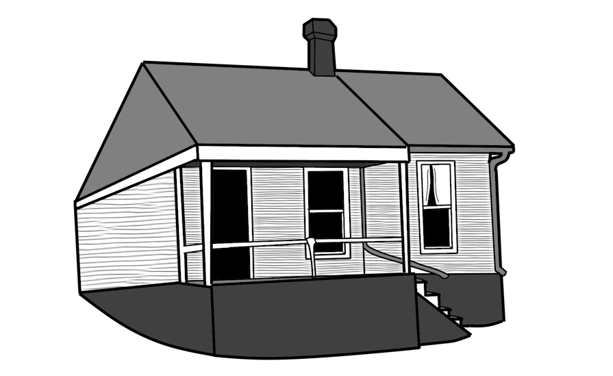
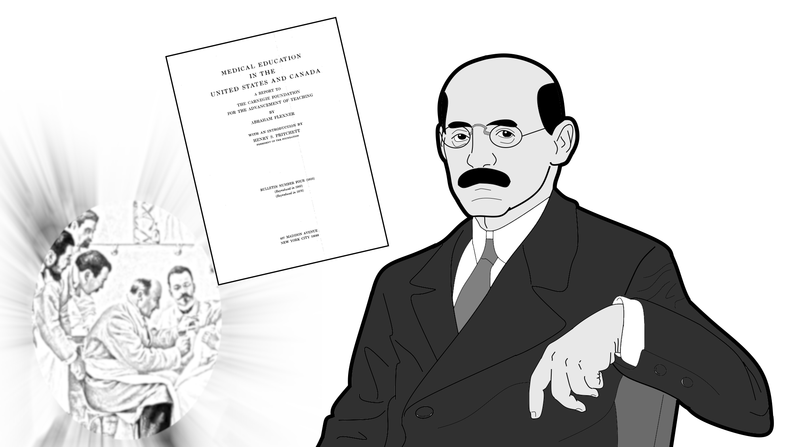
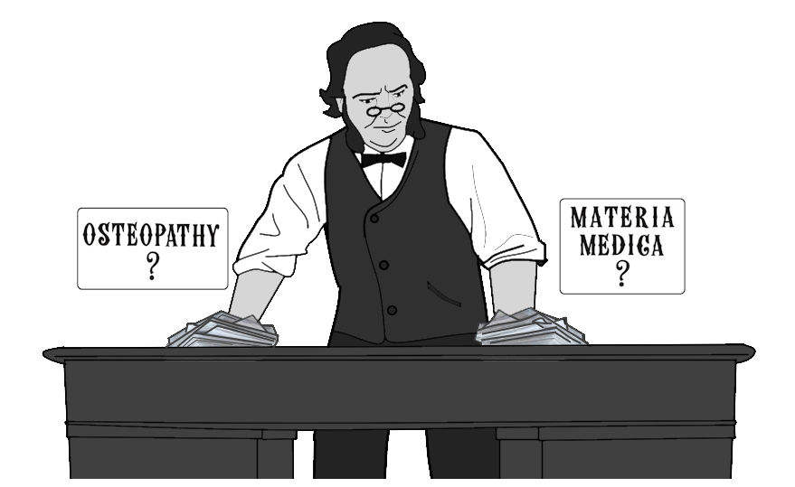
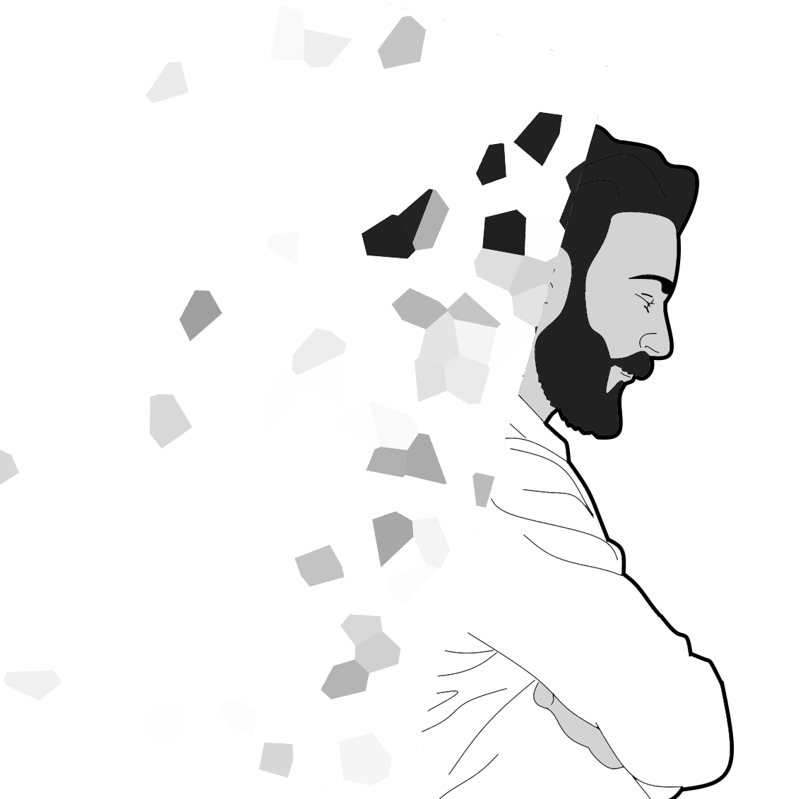
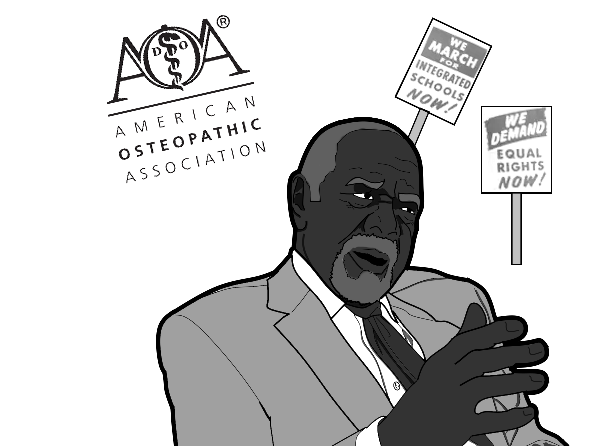

Officiellement, l’ostéopathie est créée (« découverte » d’après son créateur Andrew Taylor Still, ATS) le 22 juin 1874. Les sources historiques, elles, ne pointent un usage réelle du terme qu’à partir de 1885. Auparavant, son créateur a travaillé sous de nombreux nom « Magnetic healer », « human engineer », « Lightning bone-setter ». On peut considérer l’apparition de la profession à partir de la création de la première école, l’American School of Osteopathy à Kirksville. Celle-ci est fondée de manière conjointe par Andrew Taylor Still et William Smith, un médecin et chirurgien écossais. Avant, ATS enseignait les manipulations de manière informelle à certains patients contre la somme de 500$. Les premières promotions, comportent aussi bien des femmes que des hommes, dont notamment plusieurs de ses enfants (Blanche Still, et ses 4 frères, Charles, Harry, Herman, et Fred). Les cours se font dans un petit bâtiment adjacent la maison d’ATS (Figure 1).

Figure 1. Les premiers locaux de l'American School of Osteopathy (ASO)
À la suite de la création de l’ASO et des premiers diplômés, rapidement, vont émerger de nouvelles écoles dans les états voisins du Missouri. Souvent fondée par d’anciens élèves, nous pouvons nous reporter au rapport Flexner (Flexner, 1910) qui en dénombre 8 (Figure 2).
Figure 2. Emplacement des écoles d'ostéopathie (en vert) et de médecine (en bleu) répétorié dans le rapport Flexner
Liste des écoles auditées par le rapport flexner:
Au-delà de ces 8 écoles référencées dans le rapport Flexner, ce n’est pas sûr que ce soient les seules écoles formant les ostéopathes. On peut constater dans les journaux de l’époque des publicités pour d’autres écoles. Il faut donc supposer que le rapport n’est probablement pas exhaustif. Par exemple, le Northern Institute of Osteopathy , à Minneapolis fondée en 1896, est à l’origine des publications « The Northern Osteopath » et qui par la suite fusionna avec le Still College of Osteopathy de Des Moines (fondée 1898).
De plus, certaines écoles changent régulièrement d’implantation. Par exemple, la Massachusetts College of Osteopathy est fondée à Boston avant d’aller à Cambridge, et la Pacific School déménage plusieurs fois en Californie. De même, il leur arrive de changer de nom régulièrement. Il existe par moment deux écoles à la suite l’une de l’autre sans aucun rapport entre les deux. Exemple, à Kansas city, avant la Central School of Osteopathy (fondée en 1902-1903) a brièvement existé la National School of Osteopathy (1895-1900). Ces différents changements tendent à brouiller parfois le nombre d’école réellement existant à un instant donné. On voit que l’offre de formation de l’époque est très mouvante. Les formations se créent, s’arrêtent ou fusionnent en fonction du moment.
Il est possible de trouver dans ces même archives de journal de l’époque des publicités donnant les programmes des écoles. Par exemple celle de l’ASO en 1897:
Ou celui du Northern Institute of Osteopathy en 1899 :
On y trouve une grande place à l’anatomie, mais aussi la présence de chirurgie, et l’inclusion d’autres matières médicales. Certaines dénominations sont parfois compliquées à interpréter ou font référence à des catégories ayant changé de nom ou disparu.
Face à la grande disparité des programmes et la multiplication des écoles la profession tente de trouver des solutions. Dès 1898, l’Associated Colleges of Osteopathy est créé pour fédérer les différentes écoles existante et cet organisme existe toujours sous le nom d’American Association of Colleges of Osteopathic Medicine (AACOM).
En 1910, le rapport Medical Education In the United States and Canada est publié par la Fondation Carnegie et qui est une commande de l’American Medical Association. Son auteur est Abraham Flexner, enseignant de formation (Figure 3). Il est connu pour avoir promu des idées plutôt novatrice en matière d’éducation. Il est choisi pour rédiger ce rapport parce qu’il n’est pas médecin et qu’on attend de lui un point de vue impartial. Il a conduit un audit des écoles de formation en médecin (ou apparentée) aux Etats Unis et au Canada. Le portrait alors dressé n’est pas particulièrement flatteur.

Figure 3. Abraham Flexner et son rapport sur la qualité de l’enseignement médical aux USA et au Canada ont accéléré l’évolution de la formation des médecins et des ostéopathes outre atlantique.
Beaucoup de médecins sont formés de manière informelle par d’autres médecins sous forme de compagnonnages ou formés sur le tas durant de la guerre de Sécession (voir partie 2.4). Du fait du contexte de conquête de l’ouest, les gouvernements sont alors peu regardant et la régulation en est encore à ses balbutiements. Ce rapport, publié en 1910, constitue un tournant dans la structuration des études médicales en forçant ces dernières à se rapprocher des standards européens de l’époque. Il existe des structures tout à fait correctes et certains états s’en sortent mieux que d’autres. Si on se penche sur la situation des écoles d’ostéopathie, la situation est très variable. En Californie, par exemple, le LACO est noté comme étant anciennement une école de l’Iowa ayant migré en 1905. L’école à son laboratoire chimique mais aussi un autre laboratoire pour l’histologie, la pathologie et la bactériologie, ainsi qu’une salle de dissection. Les soins sont délivrés dans l’école et un hôpital est en cours de construction.
Le PCO a lui aussi le même nombre de laboratoire, avec une salle de dissection également. Un dispensaire est rattaché à l’école et a un hôpital rattaché à l’école pour l’obstétrique et les cas chirurgicaux mais le rapport n’a pas pu établir à quelle fréquence les étudiants travaillent dans ce dernier. Ils ne voient pas beaucoup de patient en général au cours de leur cursus (bien qu’aucun chiffre ne soit rapporté). À Chicago, le LCO en prend pour son grade. Il n’a pas vraiment de laboratoire pour les enseignements associés. Il a un petit hôpital de 20 lits. Il est considéré comme une entreprise commercial à peine dissimulée. Le Still College of Osteopathy (SCO) de Des Moins ne s’en sort guère mieux. Il n’y a pas de vrais laboratoires associés ou quand il y en a, ils laissent à désirer. Il n’y a pas de dispensaire ou d’hôpital attenant.
À Kirksville, l’ASO, école historique de la profession n’est pas en reste. Il est noté une asymétrie trop grande entre le nombre d’élève (560) et le nombre d’enseignant (12 titulaires + 11 assistants). Il ressort que tout le matériel pédagogique notamment pour l’étude de l’anatomie pathologique est acheté et ne fait absolument pas l’objet d’effort pour les conserver correctement. Les laboratoires pour les cours de chimie, d’anatomie ou de pathologie semble être des bâtiments extérieur à l’école. Les enseignants d’histologie, de pathologie ou de bactériologie sont des étudiants de dernière année. Concernant la partie pratique, un hôpital de 54 lits est disponible mais ne pratique que la chirurgie. Il existe un dispensaire où le titulaire n’est présent qu’à la première consultation de l’étudiant, et seulement à la demande pour les consultations suivante.
Non loin de là, le Central College of Osteopathy (CCO) n’a pas de laboratoires, juste deux pièces avec un écriteau chimie et pathologie. Il n’y a aucune salle de dissection mais il y a un dispensaire attenant ou des étudiants font de consultations. Sur la côte Est, le Massachusetts College of Osteopathy (MCO) possède une simple pièce servant pour les cours de pathologie et de bactériologie mais faiblement équipée, une autre pièce pour la chimie et les analyses urinaires, et enfin une pièce pour l’anatomie. Pas de dispensaire attenant pour la pratique, il faut se rendre dans un petit hôpital d’une quinzaine de lit à une heure de route de là.
Le Philadelphia College and Infirmary of Osteopathy (PCIO) a quelque laboratoire plus ou moins équipé, une salle de dissection et un peu de matériel pédagogique. L’infirmerie avec 3 lits, est distante de quelques pâtés de maison. Malgré une affirmation concernant la possibilité d’assister à des opérations à l’hôpital, il semble que ce soit un mensonge. On constate une grande disparité dans la qualité de l’enseignement des différentes écoles et aussi que la seule consultation des programmes n’est représentative de la qualité des cours dispensée. L’école d’Andrew Taylor Still ne parait pas au point comparé à bien d’autres écoles plus récentes (Comme le LACO, par ex.).
Un chapitre du rapport traite aussi de la question des « sectes médicales ». Il ne faut pas comprendre ce terme avec le même sens qu’on lui donnerait aujourd’hui. Il existe d’ailleurs plusieurs définitions possibles d’après le Centre Nationale de Ressources Textuelles et Lexicales (CNRTL). Ici, le sens serait plus proche de celui-ci « Ensemble de personnes qui se réclament d'un même maître et professent sa doctrine philosophique, religieuse ou politique, ses opinions ». Ainsi donc, il est question d’avoir une philosophie de pratique qui se démarque de la pratique médicale dite orthodoxe. On retrouve ainsi regroupés dans ce chapitre :
Flexner considère que les ostéopathes, les homéopathes, les éclectiques ou les physiomédicaux, du fait d’une base de formation très orientée vers la matière médicale, peuvent, s’ils se conforment au même standard que les écoles médicales, faire partie du monde médical. Il est en revanche beaucoup moins tendre avec les chiropracteurs, les mécanothérapeutes, et d’autres qu’il traite de charlatans car ils se prétendent médicaux sans bagage suffisant en science. Il n’est pas impossible que ce rapport et le point de vue qu’il exprime puissent en partie expliquer la trajectoire à venir des ostéopathes (DO) dans l’obtention d’une équivalence au statut de médecin (MD) là où d’autres professions comme les chiropracteurs ne l’ont pas obtenu aux USA.
Si le rapport insiste sur l’importance donnée à l’anatomie et dans une certaine mesure à la physiologie, la bactériologie et d’autres matières médical dans les 8 écoles d’ostéopathie. Il insiste sur le manque de compétence de certains enseignants, et le fait que dans ces écoles, les étudiants voient peu ou pas de patients au cours de leur cursus et que la formation peine à faire le lien entre formation, laboratoire et clinique. Enfin, d’une manière générale, le rapport propose de fermer 117 sur 148 établissements de formation médicale et la création d’un corps d’enseignants chercheur à temps plein au sein des écoles. Ce rapport produira son effet puisqu’on constate une division par deux du nombre d’école de médecine entre 1900 et 1920. On ne peut pas dire que ce résultat est le seul fait de Flexner mais il a agi comme un catalyseur qui a permis à l’AMA et à d’autres acteurs politiques d’accélérer des réformes qui avaient débuté avant le rapport.
Cela n’a pas toujours plu car la minoration du rôle des cliniciens dans la formation a été vu comme un manque de discernement de la part de Flexner. L’image des écoles d’ostéopathie est proche de celui de nombreuses petites écoles de médecine, mais loin de certaines universités de la côte Est adossées à de grand hôpitaux. Ce sont de petites structures, les cours semblent essentiellement théoriques et le matériel est limité : relativement peu ou pas de livre, pas de conservation des pièces anatomiques. Quant à la mise en pratique, les dispensaires sont petits, et ne permettent pas toujours de pratiquer, quand il ne faut se rendre dans des structures externes loin de l’école. Il existe un fossé entre les programmes annoncés et la capacité à les mettre en œuvre.
L’American Osteopathic Association qui a été un puissant moteur pour fédérer les ostéopathes a été aussi à bien des égards un frein pour l’évolution de l’enseignement des ostéopathes, soumettant l’accréditation des collèges d’ostéopathie à un programme précis où la matière médicale comme la pharmacologie reste limitée pour ne pas trop se rapprocher de ceux des médecins de l’époque. A partir de 1929, à la suite d’un vote interne, elle permet l’évolution des dits programmes pour que la matière médicale y prenne davantage de place. Bien qu’elle rétropédale partiellement l’année d’après, en disant qu’il s’agit plus d’une tolérance qu’une autorisation (Know the enemy d’après le président de l’AOA Warren B Davis), les choses sont déjà entendus. Dès lors la matière médicale intègre la formation pour de bon.

Figure 4. Dilemme présent depuis les débuts, intégrer les progrès de la science médicale dans la pratique ou bien s'enfermer dans une immuabilité mortifère
Il faut voir que cette nouvelle manière de former est très mal acceptée par les anciennes générations d’ostéopathe. Pour autant, la profession voit son identité se transformer. Si les premiers temps et les premiers écrits de Still étaient volontairement contre les médicaments du fait de la médecin héroïque, l’inclusion de la matière médicale se fait parce que les ostéopathes revisitent la figure d’AT Still. Ainsi, Fryette écrit en 1919 :
« Dr Still savait qu’il y avait plus au sein de l’ostéopathie que ce qui avait été enseignés aux débuts de celle-ci. Il dit ceci : maintenant, les jeunes, j’ai attrapé l’écureuil par la queue : c’est à vous de le faire sortir totalement de sa cachette ».
Ceci permet ainsi de ne pas considérer les choses comme définitive et ouvrir la possibilité d’une évolution de la pratique et de l’identité. Il s’opère aussi un glissement dans la sémantique de ce qui est choisi pour formuler les principes de l’ostéopathie (voir dans la section sur l'histoire du concept). D’une opposition franche à la médecin orthodoxe, la place de l’ostéopathie va glisser progressivement vers une identité séparée mais égale à celle des médecins.

Figure 5. L'identité professionnelle est une chose mouvante et fragile
Dès les années 1940, en Californie, commence à être discuter un possible rapprochement des DO et des MDs et de leur écoles respectives. Dès 1951, au niveau national, le Comité « Cline » fondé par l’American Medical Association a pour objectif de vérifier le contenu de la formation des écoles des DOs, de sa qualité et si la formation a les apparats d’un culte médical (comprendre « centré autour d’une personne »). En 1955, après un audit de 5 des 6 écoles, malgré des différences de qualité de formation avec leur équivalent médicaux, les principales différences portent avant tout sur l’importance de la thérapie manuelle et de la philosophie ostéopathique dans la formation. Cependant, pour le comité, cela ne constitue pas un problème de culte médical. Ces conclusions après des débats seront balayé d’un revers de main par l’AMA. En Californie, cependant, ce revers n’entame pas la volonté de rapprochements des deux professions. Il en résulte « The Merger » (La fusion), les DOs deviennent des MDs reconnu par le Board chargé de donner les licences d’exercer des Médecins. Le Los Angeles Osteopathic College (lointain descendant du PCO et du LACO) devient une école de médecin classique. En 1960, l’AMA décide de retirer l’étiquette de culte médical à la profession des ostéopathes aux USA, afin de favoriser d’autres fusions dans le reste du pays.
Dans le reste des USA, les ostéopathes sont devant un dilemme, suivre la voie de la Californie ou bien affirmer l’importance d’une identité propre qu’il faut conserver. La plupart suivent ce second choix tout en utilisant the Merger pour réclamer pour les DO un statut équivalent aux MD dans leur propre état. Ce lobbying actif porte ses fruits, et on voit même la fondation de nouvelles écoles dans certains états au cours des années 70. Par la suite, une des dispositions du Merger qui prévoyait de ne plus délivré de diplôme de DO en Californie est jugé inconstitutionnel. Cela permet la réapparition d’une école privé de formation en Californie à Pomona. De fait, dans les autres états, malgré le fait que les ostéopathes ne soient plus affublés de l’image de culte médical, les institutions médicales constatent une volonté de ne pas fusionner de la part des ostéopathes. L’AMA tente alors de contacter les étudiants des écoles d’ostéopathie pour leur proposer d’être intégré les écoles médicales espérant ainsi vider les collèges d’ostéopathie. Par ailleurs, l’AMA permet l’intégration des DO dans les différentes institutions mais surtout dans le programme ACGME (qui permet in fine de devenir MD). L’AOA impose alors d’avoir validé un internat spécifique afin d’ensuite intégré l’ACGME (programme de formation continue). Ces deux dispositions de l’AMA ne portent alors peu ou pas leurs fruits ou du moins partiellement
Le nombre d’ostéopathe formé ne diminuera pas au contraire même si un nombre toujours plus important intègrent les programmes d’internat en médecine. La fusion ou Merger n’a finalement pas conduit à l’assimilation des ostéopathes mais a, au contraire accéléré l’obtention d’un statut équivalent au MD et renforcé leur position. Il est à noter que certains économistes dans les années 80 voyait dans la rivalité entre deux professions une situation intéressante dans le fait que casser le monopole obligerait les deux parties à évoluer sur leur pratique. Les DO pratiquant d’une manière très similaire aux MDs (médicaments, etc..) aurait pu servir de tierce partie pour juger de la qualité des soins sans risquer de représailles de la part de confrère. De même, en exerçant de manière concurrente, ils auraient pu pousser les médecins à intégrer davantage le Medicaid (équivalent du conventionnement en France pour limiter le coût des soins pour les patients de faible revenu) ou à défaut que les DO le fasse à leur place. Il est en fait mis en avant que cette mise en concurrence et la production d’avis contradictoire permettent une sorte de système à trois entre l’état, l’AMA et l’AOA dans l’évolution du système de santé.
Enfin, il faut voir qu’à partir des années 70, l’Osteopathy est devenu l’Osteopathic Medicine, Gevitz notait également que dès les années 40, les DO préférait le terme d’Osteopathic Physician à celui d’Osteopath. Ce changement sémantique n’est pas anodin et renvoie au rapprochement avec la médecine orthodoxe.
Il est intéressant de suivre les questions réponses du JAOA (Journal of American Osteopathic Association), car on peut constater un certain nombre de débat au sein de la profession. On peut ainsi observer que la question de la dette des étudiants ostéopathes aux USA est un sujet de préoccupation. C’est assez logique puisque depuis deux décennies la dette étudiante a plus que doublé d’après le Council for Foreign Relation, faisant peser un risque non négligeable sur la société américaine à laquelle appartiennent les DOs. Bien qu’il soit constaté que la dette étudiante est en augmentation constante chez les étudiants ostéopathes aux USA, il semble qu’elle n’impacte pas fortement la satisfaction des étudiants bien qu’on observe une tendance à la baisse de cette satisfaction au fur et à mesure des années. On observe ainsi un certain regret dans leur choix de carrière, par rapport à une école de médecine classique (Pour autant, le coût des études resterait plus faible dans le cursus des ostéopathes par rapport aux écoles de médecines?). Ces éléments s’ajoutent au fait que le cursus des Osteopathic Physician a été utilisé comme une porte dérobée d’accès au MD depuis de plusieurs décennies. Ces derniers de fait, s’intéressent peu aux éléments historiques qui explique cette dualité. Il en résulte une identité professionnelle amoindrie. Cela vient aussi d’un assouplissement des règles de l’AOA concernant l’ACGME ce qui fait que 60% des DOs intègrent ce cursus à la suite de leur formation.
Il est possible constater que la fin des années 2010 est une période de changement au niveau des cursus et mais aussi par nécessité d’embrasser l’evidence Based Medecine pour les Doctors of Osteopathy. Il en ressort un certain repli identitaire sur les principes ostéopathiques. Il faut comprendre qu’une des conséquences de l’équivalence MD/DO a conduit à produire un des effets redouté du Merger, l’invisibilisation des DOs. Il semble aussi que le grand public ne connaisse peu ou pas la différence entre les deux professions, et que partiellement l’équivalence MD/DO. Certains auteurs comme Pandeya soulignent même que l’école (SCO) de DesMoines n’étaient pas identifiée par les habitants comme une école de Médecine mais plus comme une école formant des chiropracteurs. Enfin, une étude de Licciardone de 2011 montrait que les jeunes générations étaient moins au courant de l’existence des DOs par rapport aux anciennes générations. Cela conduit donc à une diminution de la visibilité de la profession alors même que la part des DOs au sein de la profession médical a connu une croissante surprenante (passant d’à peine 5% des nouveaux diplômés dans les années 60 à quasiment 25% en 2019). Il existe actuellement 42 collèges d’ostéopathie aux USA. Ceux-ci ont largement augmenté leur capacité d’accueil à la différence de leur équivalents médicaux. En 30 ans, le nombre d’ostéopathe a été multiplié par 4 pour atteindre presque 1600000 DOs en exercice. 60% d’entre eux ont moins de 45 ans et 48% sont des femmes.
Il faut noter des différences dans les choix d’exercices des DOs par rapport aux MDs, les premiers vont davantage exercer dans les zones rurales et préfère le Primary Care, c’est-à-dire, les soins primaires (63% des DO contre 22% des MD), ceux de première ligne, qui constituent la porte d’entrée du parcours de soin avec une tendance à essayer de rester accessible aux patients au plus faible revenu du Medicaid même en cas de réduction de la part du remboursement (au New Jersey en 1975 par ex). Cette appétence pour le milieu rural et les soins primaires s’explique peut-être par le fait que le programme d’internat de l’AOA a lieu davantage dans les villes moyennes que les internats de l’AMA. De même, il a été mis en évidence que les ostéopathes sont beaucoup moins présents dans les board éditoriaux des grands revues médicales, montrant une place peut présent au sein du monde de la publication scientifique.
Il est à noter enfin des différences dans la manière de conduire les consultations et le soin avec un recours moins fréquents aux anti-inflammatoires et aux opioïdes, avec de bien meilleurs résultats sur la catastrophisation, le sentiment d’auto-efficacité du patient. Il est aussi rapporté une plus grande empathie et un meilleur contact humain. Enfin, il semble que le diplôme de Doctor of Osteopathic Medicine ne permettent pas à leur détenteur d’exercer en tant que médecin à l’étranger ou alors avec difficulté. Au-delà de ça, nous verrons dans le chapitre 3, l’ostéopathe n’a pas acquis un statut similaire à celui des DOs américains ailleurs dans le monde en dehors d’une exception comme la Fédération de Russie. Cela rend la situation des DO bien ambiguë aussi bien sur le plan national et international.
L’ensemble de ces constats peuvent expliquer une certaine dilution de l’identité de l’ostéopathe américain qui se cherche au sein du système de santé, partagé entre des ostéopathes qui visent le rôle de médecin, et des ostéopathes repliés sur une vision très traditionnaliste ou qui invoquent Still comme un guide dans ces temps d’incertitude. Comme le disait Gevitz dans les années 1980 : « Les mouvements comme l’ostéopathie, l’homéopathie ou l’éclectisme ont en général un cycle de vie naturelle. Ils sont issus d’une crise dans la prise en charge médicale ; leur jeunesse est marquée par l’élargissement/la diffusion de leurs idées ; et leur déclin apparait lorsque les notions propres à leur manière de prendre en charge leur patient s’amenuisent. À partir de ce moment, ils n’ont plus de raison d’être et s’éteigne ». À un moment où ils n’ont jamais été aussi nombreux aux USA, il reste donc aux DO à réfléchir à ce qui rend singulière leur manière de soigner. Et aujourd’hui comme hier, son identité semble se définir par rapport à celle de sa contrepartie médicale orthodoxe.
Enfin, il semble que le rapprochement entre les programmes d'internat de l'AOA et de l'AMA soit en partie considéré comme une nouvelle tentative de fusion des deux professions ou du moins une nouvelle étape en ce sens.
Les premières promotions d’ostéopathe ont toujours été marquée de la présence de femmes. Elles ont donc très tôt participé au développement de la profession (voir la partie 2.3). Pour autant, nous l’avons dans la partie précédente, elles ne représentent encore que 48% de la profession. Le fait d’approcher la parité à été une progression qui s’est faite lentement, passant de 1,9% en 1968 à 30% des diplômés en 1992. Il est d’ailleurs important de noter que même après le rapport Flexner, les femmes ne pouvaient guère tenter d’études dans le domaine médical que dans la moitié des écoles de médecine. Les écoles d’ostéopathie dans la même période acceptaient les femmes, faisant ainsi figure d’exception. En 1908, 35,5% de la profession était féminine. Ce fait se poursuivit jusqu’en 1923, où près de la moitié des étudiants en ostéopathie était des étudiantes. Ce chiffre tombe à 12,5% en 1928, et cette diminution se continue jusque dans les années 50. Le rebond ne se fait qu’à partir des années 60.
Cette féminisation de la profession est un phénomène globale dans le domaine de la santé. Au sein de la profession médicale en général, il est observé la même augmentation du nombre de femme médecin ces dernières années. Cependant, il a été mis en évidence que la crise du COVID-19 semble avoir diminuer la présence de femme à certains hauts postes dans l’ostéopathie. Elizabeth Beverly pointe que le fait d’être mère a conduit pour de nombreuses femmes à renoncer à certaines fonctions pour privilégier leur rôle parental. Cette tendance s’inscrit dans un contexte plus large de diminution de la présence des femmes à certains postes dans le domaine scientifique (une baisse de 30 à 40%), dans la soumission de pre-print sur MedRxiv (-44%), et dans la publication dans le domaine biomédical (-9,5%).
Plusieurs figures féminines de la profession sont présentées dans la partie "Figures historiques" du site.
Les communautés afro-américaines, hispanique, indigènes sont particulièrement sous représentées dans les études médicales. Ce manque de diversité peut s’expliquer par de nombreux facteurs : prix des études, demande de lettre de recommandation d’un médecin pour prétendre aux études, composition de la population de certains états, absence de connaissance de la profession, manque de modèle exerçant cette profession au sein de la communauté. De plus, l’impact de ces facteurs est différent selon la communauté, ainsi les population afro-américaine sont plus impactée que les populations hispaniques (qui regroupe par ailleurs les ressortissants/descendants d’Amérique Latine et les descendants d’européens d’origine hispanique). Pour autant, le groupe hispanique représente en proportion le groupe le plus sous-représenté au sein de la profession médicale. Les minorités représentent 30% de la population des USA mais 6% des médecins. Malgré tout, au sein de la filière des DOs, une étude de Magaret Reich a montré une progression de la part des minorités parmi les étudiants passant de 2,9% des effectifs à 12,6% entre 1976 et 1988, multipliant par 4 le nombre d’étudiant hispanique et par 3 les étudiants afro-américains.
Il faut noter que les collèges d’ostéopathes demandent davantage ces lettres de recommandations (81,8% contre 3,9% pour les autres écoles d’études médicales), ce qui semble être un frein non négligeable. Un travail de recherche sur l’expérience d’étudiantes hispaniques montre une motivation à aider leur communauté mais aussi de servir de modèle pour encourager d’autres membres de la communauté hispanique à embrasser les mêmes études. La sensation de mise en compétition et d’exigence vis-à-vis du travail à produire sont très présentes dans les propos rapportés. Des expériences de discrimination sont aussi mises en évidence.
D’un point de vue historique, il semble que la communauté afro-américaine accède plus tard aux études pour devenir DO alors qu’il semble que les études à l’ASO du temps de Still leur étaient ouvertes. Mais le contexte historiques associé à la marginalisation de cette communauté peut expliquer l’absence de DO afro-americain à cette époque. Pour rappel les positions abolitionistes d’Andrew Taylor Still n’étaient pas des plus populaires dans le Middle West, et les Border Ruffians (groupes esclavagistes à l’origine de nombreuses exactions) étaient originaires du Missouri où se trouve l’ASO. Cette dernière accueille en son sein un médecin enseignant d’origine japonaise, Kamicke Nemoto au début du XXème.
On trouve de nombreuses figures aforamericaines au sein la profession des Osteopathic Physician, notamment William G Anderson (Figure 2.h), défenseur des droits civiques au coté John Martin Lutherking, diplômé de l’école de DesMoines, et qui deviendra membre du bureau de l’AOA avant d’en devenir le président en 1994. Il enseignera aussi dans plusieurs collèges d’ostéopathie et sera aussi le co-Doyen du Kirksville College of Osteopathic Medecine (KCOM, nouveau nom de l’ASO).Un programme d’aide financière de l’AOA pour les étudiants issus des minorités porte son nom aujourd’hui.

Figure 6. William G Anderson, défenseur des droits civiques, et membre important de l’AOA
On peut noter également le nom de Rose E Lee première femme noire à devenir doyenne d’une école de Médecine aux USA (ici d’ostéopathie). D’autres programmes ont été mis en place pour favoriser la diversité au sein des programmes de formation comme le programme COMPASS à New-York (Creating Osteopathic Minority Physicians Who Achieve Scholastic Success). D’une manière générale, l’AOA et la profession ont permis un peu plus d’opportunité aux afro-américains contrairement à l’AMA d’après Darnita A Hill. Cependant, les DO afro-américain ont subi en général une double discrimination, une du fait de leur couleur de peau et une du fait d’être DO et non MD. Enfin, dernier point à soulever, les communautés hispaniques et afro-americaine sont parmi les communautés consultant le moins les DO. Cette méconnaissance de la profession peut aussi en partie jouer dans le manque de minorité au sein de la profession.
Pour comprendre l’émergence de l’ostéopathie, il faut comprendre la période historique qui l’entoure.
Concernant la médecine de l’époque, elle fait face à plusieurs défis importants :
Il en résulte une tendance à la mise au point de nombreuses théories et courants pour tenter d’expliquer les causes de ces pathologies. Un des livres populaires du XIXème aux USA est le livre de William Buchan, Domestic Medicine. Celui-ci pose justement le problème de classifier les pathologies en fonction des symptômes, et surtout les traitements sont vus uniquement sous ce prisme. C’est-à-dire qu’un traitement qui ferait diminuer le symptôme sans modifier l’état infectieux du patient serait vu de manière positive malgré le fait que celui-ci s’avère finalement peu efficace. On parle aussi de médecine héroïque pour qualifier cette médecine basé sur des traitements excessifs, inutiles voir parfois franchement dangereux.
Prenons quelques exemples précis, par exemple, les problèmes de vigilance traité par opium, les problèmes inflammatoires par des saignées, problèmes intestinaux par des purgatifs, du mercure pour la syphilis, etc… L’avantage, c’est que le médecin a toujours quelque chose à proposer qu’il connaisse ou non la pathologie. Certains traitements sont vu comme des panacées comme la saignée. On voit des exemples donnés sur l’usage de saignée pour traiter la malaria avec pour issu la mort du patient. À l’inverse certains médecins, considère qu’observer le court naturel de la maladie s’avère plus judicieux qu’une attitude pro-active. Il existe aussi de nombreux de coffre de remède prêt à l’emploi pour le tout un chacun afin de soigner sa famille car c’est aussi ça la médecine domestique. C’est probablement ce type de problème qui mène à l’apparition de l’ostéopathie, mais aussi le développement de sectes médicales au sens où l’entend Flexner. Ces dernières ont l’avantage de proposer des traitements qui ont peu ou pas d’effets secondaires graves tout en donnant une attitude pro-active au thérapeute qui les propose. Au mieux, la part même réduite d’effet spécifique combinée à la part non spécifique plus importante aident le patient à aller mieux, au pire, c’est l’évolution naturelle de la maladie qui soigne le patient. Dans les autres cas, au vu de la thérapeutique disponible, le patient n’aurait pas survécu.
Ainsi, si on reprend les écrit d’AT Still à la lumière de ces informations, on voit qu’il se fond parfaitement dans cette tendance. Il apporte une théorie visant à essayer d’expliquer un ensemble de pathologies avec une cause unique, avec des traitements plutôt simpl(ist)es pour résoudre le problème avec une grande part d’attentisme (find it, fix it, and leave it alone). D’ailleurs, nous pouvons voir que le courant émergeant à un tournant de la médecine puisque les ouvrages sont souvent divisés par symptômes et/ou par maladie. On retrouve de nombreux éléments dans les principes dans les ouvrages de Still qui rappelle certains éléments propres aux livres de médecine domestique. Quant aux descriptions de traitements manuels soignant des maladies infectieuses, il parait peu probable d’accorder du crédit à ces dernières, ou du moins, d’accorder un quelconque rôle de l’ostéopathe dans le soulagement du patient. Il est probable que l’évolution naturel de la maladie soit davantage à l’origine du rétablissement du patient atteint.
C’est aussi dans cette période historique que l’on voit émerger les mouvements antivaccins. Ces mouvements ont lieu aussi bien en Europe qu’aux Etat-Unis, amenant au vaccination Act au Royaume Uni. Aux USAs, il faudra attendre une décision de la cours suprême en 1905 pour statuer sur le caractère constitutionnel de la vaccination des populations. Bien souvent, des motifs religieux étaient invoquer pour échapper à la vaccination. On voit souvent dans les caricatures une certaine confusion entre vaccination et variolisation. Il est probable que la position anti-vaccin de la population mais aussi d’une partie des médecins et des premiers ostéopathes se fasse aussi en réaction par assimilation du vaccin comme un autre traitement potentiellement délétère comme la médecin héroïque en a connu par le passé. Il faut comprendre que le passage de la médecine héroïque à la médecine expérimentale se fait progressivement et que donc pour les populations de l’époque la différence soit difficile à distinguer dans un premier temps.
Concernant la formation des médecins, le XIXème est le tournant dans la formation des médecins. Les écoles de médecine sont encore de qualité très inégale et la formation des médecins glisse doucement d’une structure à base de compagnonnage (encore en application au RU au XVIIIème) vers une formation structurée et encadrée légalement. La structure même des Etats-Unis avec des situations très différentes entre la zone historique de la côte Est et les autres territoires qui s’organisent en état progressivement laisse aussi flotter un moment de flou où la législation permet aussi l’émergence de pratique médicale « alternative ». Le rapport Flexner de 1910 a participé à structurer les choses. Il s’agit dès lors de permettre la constitution d’une profession homogène et de voir aussi parmi ces différents courants médicaux lesquels peuvent être assimilé au sein du système médical. C’est aussi dans ce tournant qu’apparaissent les premières sociétés médicales qui cherchent aussi à faire le tri parmi les professionnels se revendiquant comme médecin. Si le tri dit s’opérer entre vrais médecins et charlatans, le système passant par coaptation est vu avec méfiance surtout dans un contexte de concurrence commercial entre médecin. De plus certaines d’entre elles n’ont d’influence que sur une ville en particulier et pas sur l’état entier. Beaucoup sont très éphémères et ne durent qu’une ou deux dizaines d’années.
La mise en place de licence par l’état se fait à la demande parfois de ces sociétés qui influent pour obtenir ce droit à délivrer les licences toujours dans cet objectif de contrôler le marché du domaine médical. C’est ce qui va se passer dans un grand nombre donnant une légitimité à ces sociétés jusqu’à ce que certains états imposent un certain cadre en mettant en place un licence board indépendant. Le but est de limiter certains conflits d’intérêt et malversations possibles. Il faut noter qu’en 1850, à l’exception de deux états, la plupart des états avait abrogé la nécessité de licence sans board indépendant, pas de possibilité d’un processus de reconnaissance fiable. Les sociétés médicales sont elles aussi dans le viseur de plusieurs lois visant à contrôler leur comportement.
Il faut comprendre que la circulation des informations est très dépendante des communautés religieuses de l’époque et que ces dernières jouent un rôle dans l’éducation des masses. Selon la communauté dont vous faites partie, vous n’avez pas accès aux mêmes informations. Le XIXème siècle est aussi traversé d’un renouveau du spiritualisme. Or il a été constaté souvent une association historique de ce type de mouvement lors de période de réforme. D’aucun attribut l’esprit de réforme au développement du spiritualisme puisqu’il est une remise en question des dogmes traditionnels. Il y a aussi la question de l’invisible et du pouvoir de l’invisible dans la société humaine. Ce n’est pas une surprise donc de trouver un engouement pour le spiritisme, le mesmérisme (et le magnétisme en général), l’hypnose ou l’usage d’électricité. Le contact aussi avec les tribu de natifs amérindiens infuse dans la société des notions proche de l’animisme que les grands espaces vierges vont exacerber.
Certains d’entre eux d’ailleurs ne cache pas leur volonté d’adresser certains problèmes de santé et le font dans des écrits où le divin tient une place importante. Plusieurs figures importantes sont à connaître tel que Andrew Jackson Davis, William Levington, Chancey Hare Townsed, et enfin, Franz Anton Mesmer. Ces courants sont considérés comme blasphématoire et deviennent la cible de ceux qui se considèrent comme des défenseurs du Christianisme. Certains voit aussi dans ce renouveau du spiritisme une continuité du déisme issue de la période post révolutionnaire. Pour rappel, en France, était apparu le culte de l’Être Suprême au début des années 1970. Il fait écho notamment au concept de Grand Architecte de la Franc Maçonnerie et lié aussi au concept de religion naturelle. On retrouve aussi ce concept de déisme de Voltaire ou de théisme chrétien de Rousseau. Cette idée provient d’un besoin de créer une paix sociale après la déchristianisation acharnée de la période de la Terreur. C’est une religion civile dont le but était d’unifier les croyants de différentes confessions. Elle était aussi une tentative par Robespierre de contrer le temple de la raison qui est le pendant athéiste de la déchristianisation post révolutionnaire.
Ces éléments de spiritualité semblent assez fortement liés avec les courants anti-esclavagistes, en faveur des droits des femmes, et pour une réforme du système de santé. On les retrouve davantage chez les habitant du nord des Etats-Unis et donc loin de la future Bible Belt. Il n’est donc pas étonnant de trouver des éléments de ces tendances au sein des premiers textes d’AT Still. Néanmoins, gardons en tête que ce courant a amené aussi un certain nombre de médiums et d’affabulation aussi de toutes sortes, mais aussi de conception de maladie pas toujours éloignée de certains mouvement religieux où la maladie est vue comme une punition par rapport à un comportement contraire à la moral ou à un vice. C’est aussi un trait partagé par une partie de la population protestante de l’époque, pour qui le fait de savoir souffrir en prenant sur soi à avoir avec la divine providence. Il y a aussi des témoignages de sanatorium dans lesquels la prière et la question de la piété pour l’obtention de la guérison est nécessaire. La formation des infirmières n’est également pas dénuée d’aspect religieux, ce qui peut avoir un lien avec l’origine de la profession. Il n’est donc pas rare de voir les questions de foi, de croyance et de soin s’entremêler, parfois promu par certains médecins de l’époque.
L’ostéopathie émerge à la faveur de nombreux facteurs :
En somme, l’ostéopathie est un produit de l’époque qui l’a vu naître. Elle n’est pas une révolution, elle est un courant thérapeutique comme tant d’autres. Ce qui est différent en revanche, c’est le fait qu’elle ait pu se hisser jusqu’à devenir l’équivalent de la médecine « orthodoxe » bien que minoritaire au sein de la profession médicale états-unienne.